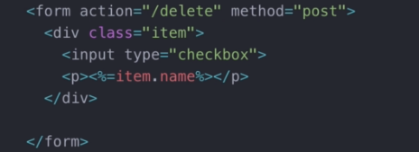

How to submit a checkbox?

This syntax won't work as there was no submit button anywhere inside the form. To enable this, we must detect if something has change inside the input elemenent using the onChange method,

And if something has changed, we will select this form and submit it using the submit method in javascrit syntax.
In the back end, this is preety useless without an identifiable name, so we must add it

This will output if the input called checkbox is "on" or "off", to modify the values, we could initialize a value attribute inside the input

Written in ejs, but basically it will simply get the id of thing called items in a for each loop.